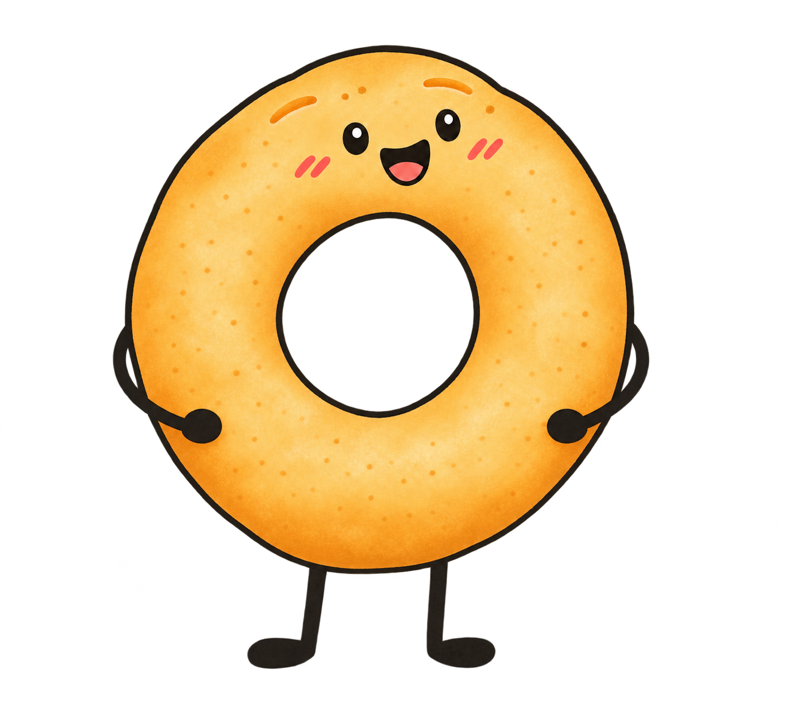
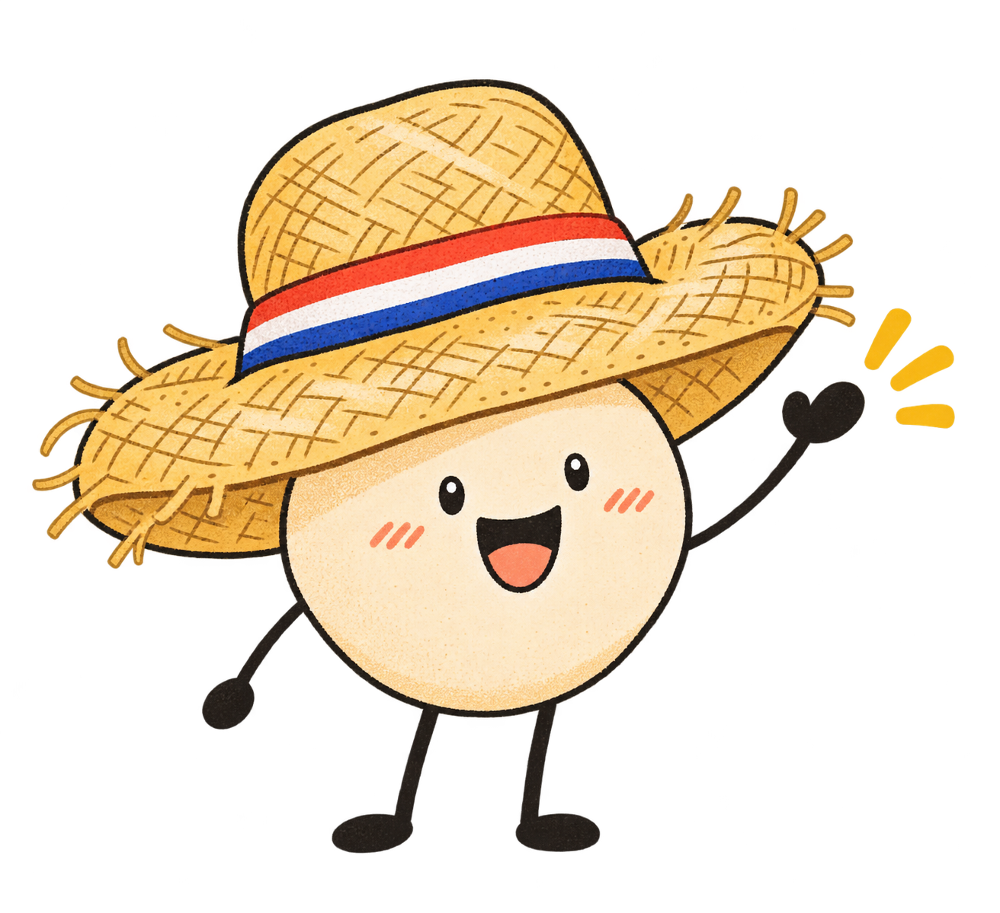
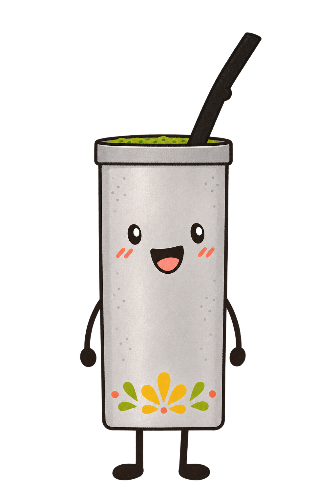
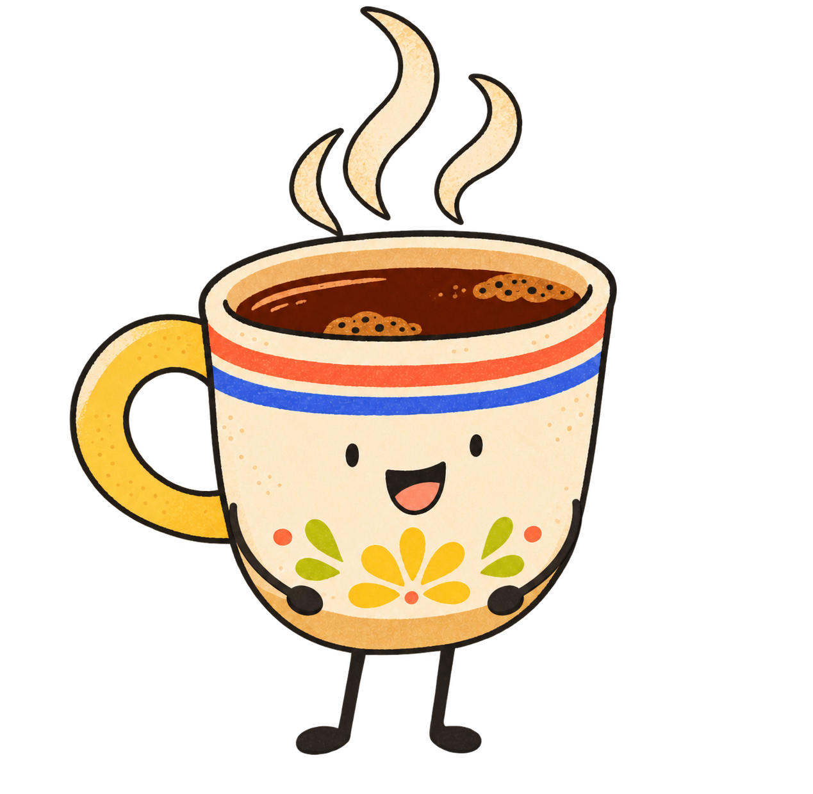
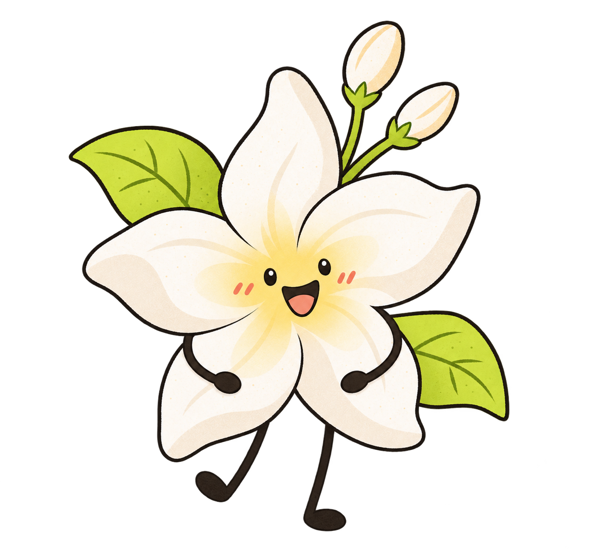
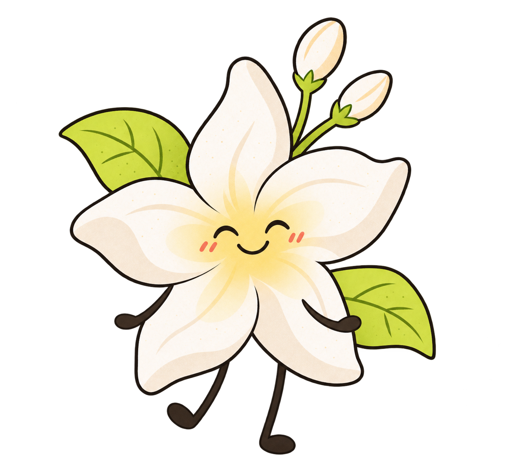
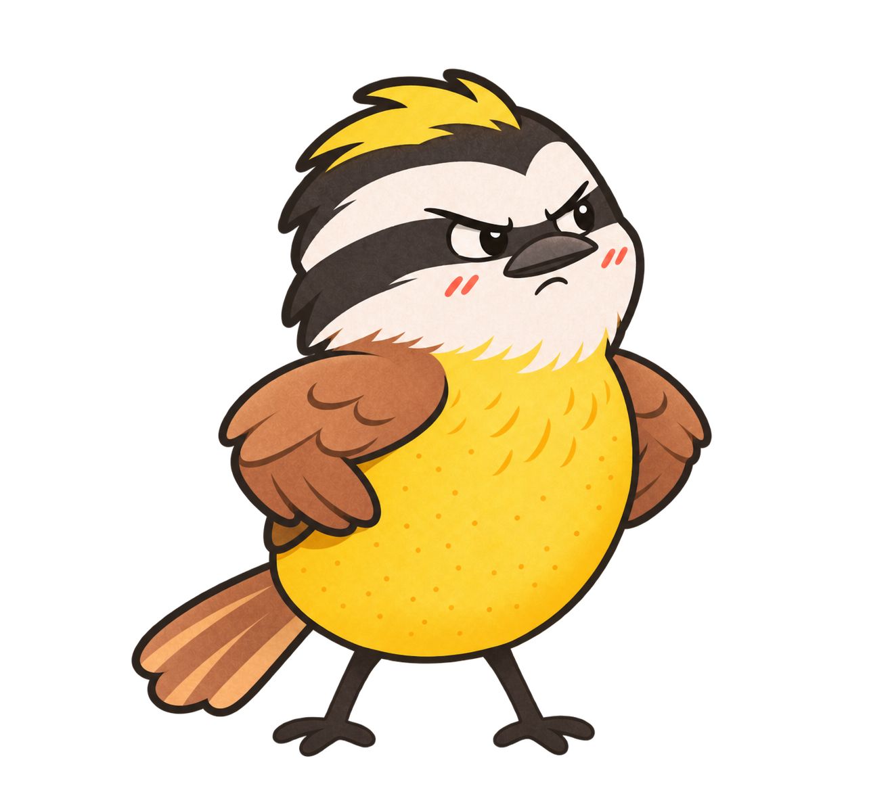
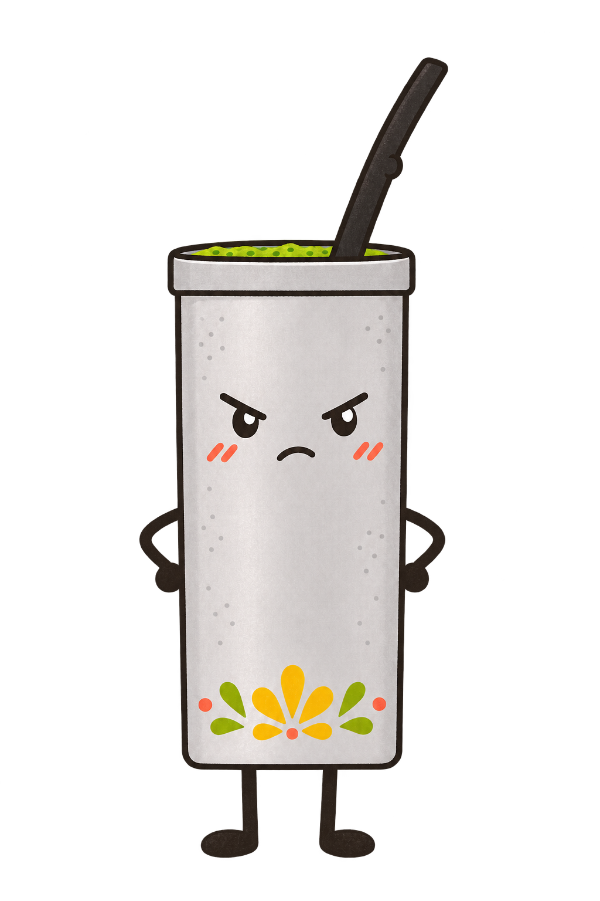
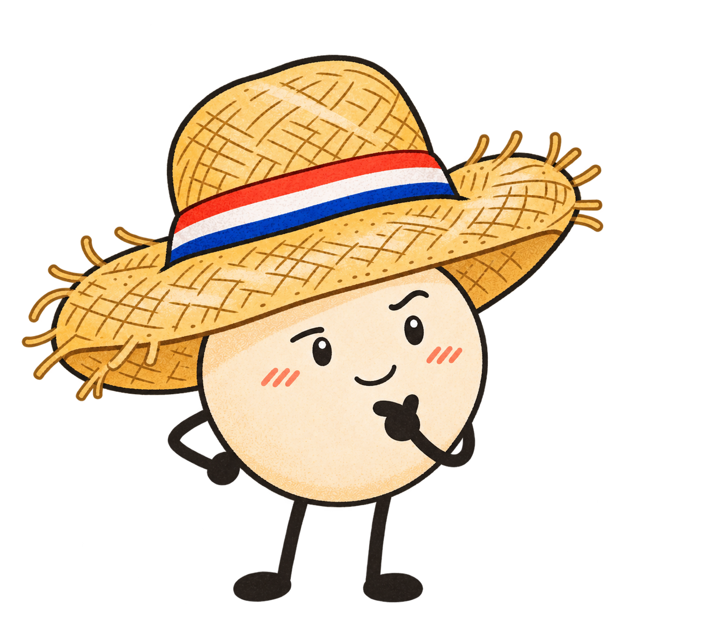
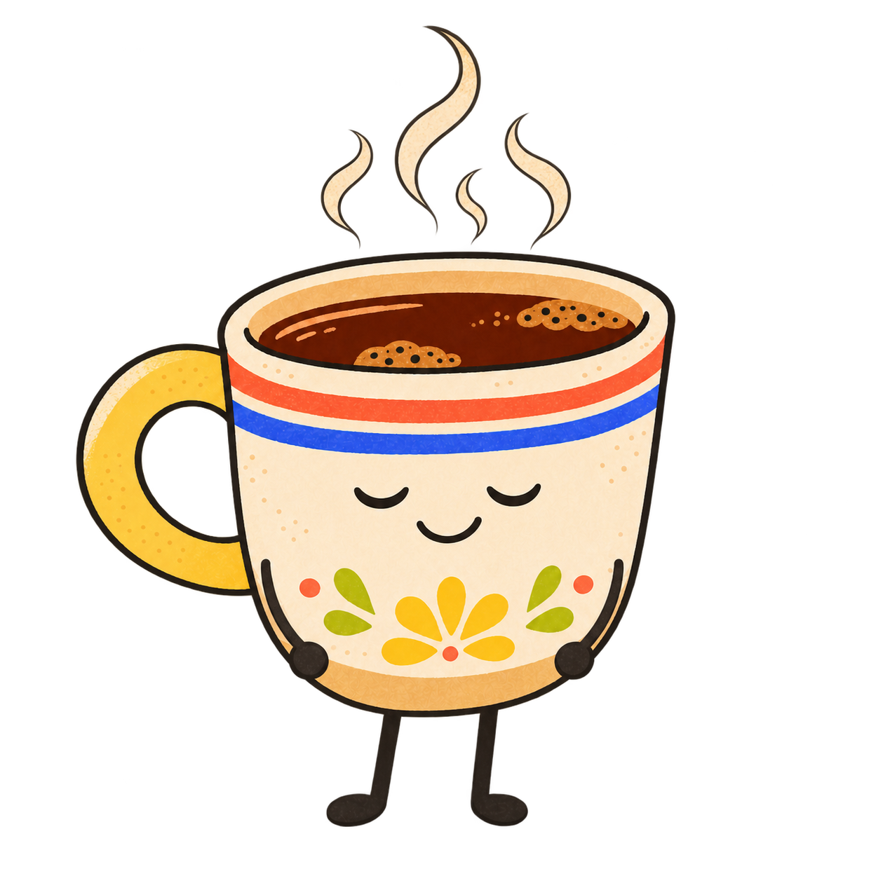

Amistad
Mba'eichapa
Hola.
Pronunciación aproximada
Mba’eishapa
La ch en guaraní suena como una sh.
Cuándo se usa
Como saludo cotidiano.
Guaraní · Jopara · Paraguay
Guaraní y Jopara de todos los días
Para turistas, curiosos (y locales que ndoikuaái)

Diccionario emocional

Hola.
Mba’eishapa
La ch en guaraní suena como una sh.
Como saludo cotidiano.
¿Qué contás? ¿Qué tal?
Como saludo informal entre amigos o personas de confianza.
¿Qué tal? / ¿Y después?
Jaupéi
La h en guaraní suena como la j.
Depende del contexto. Puede utilizarse como saludo informal o como reclamo para preguntar qué pasó después.
“Haupéi, ¿qué pasó con eso que dijiste que íbamos a hacer?”
Escuchame un poco. Escuchame, por favor.
Ejendumína sheve
La h en guaraní suena como la j.
La ch en guaraní suena como una sh.
Para pedirle a alguien que te preste atención.
Estás hablando y tu amigo no te presta atención: “Ehendumina cheve.”
Vamos pues.
Yajá pues
La j en guaraní suena como la y.
La h en guaraní suena como la j.
Se usa en el día a día para invitar a alguien a ir acompañado a algún lugar.

Partícula interrogativa que añade énfasis.
Pió / pikó
Convierte una frase en pregunta y le da énfasis.
“¿No lo viste pio?” / “¿Cómo pio?”
Mi amigo, mi socio o “bro”.
Shera’a
La ch en guaraní suena como una sh.
Una forma coloquial y cercana de dirigirse a un amigo.
“¿Cómo estás, chera’a?” / “Te quiero, chera’a.”
Fingido, de mentira, de juguete o difícil de creer.
Para señalar que algo es fingido, falso o poco creíble.
“¿A quién gua’u le gusta eso?” / “Eso es de gua’u.”
¡Qué locura!
La y en guaraní suena como una u gutural.
Literalmente significa “estás loco”, pero se usa como expresión de asombro.
“Bajaron los precios, nde tavy.”

Muchas gracias.
Aguiyeveté
La j en guaraní suena como la y.
Para expresar un agradecimiento especialmente fuerte o sincero.
Andá con Dios.
Una despedida afectuosa que desea protección y bienestar.
No es nada. De nada.
Ndaja’ei mba’eve
La h en guaraní suena como la j.
Como respuesta a un “aguyjevete” o a un agradecimiento.
Ya vale demasiado. Ya está perfecto.
Después de recibir un favor muy grande o cuando alguien ya hizo más que suficiente.
Te amo.
Rojaijú
La h en guaraní suena como la j.
La y en guaraní suena como una u gutural.
Para expresar amor o cariño hacia otra persona.

No puedo estar más feliz.
Para expresar un nivel máximo de felicidad.
Me dio piel de gallina.
Shemopirimbá
La ch en guaraní suena como una sh.
Cuando algo te emociona o impresiona intensamente.
Acabás de ver una película increíble: “Chemopirimba.”
¡Qué hermoso!
Cuando algo sale perfecto, te parece hermoso y te produce satisfacción.
Estoy demasiado feliz. Estoy de fiesta.
Sherory
La ch en guaraní suena como una sh.
La y en guaraní suena como una u gutural.
Cuando estás tan feliz que se te nota en la cara.

Me alegro por vos.
Avy’a ndereje
La y en guaraní suena como una u gutural.
La h en guaraní suena como la j.
Después de que un amigo te cuenta una gran noticia.

Alejate. No molestes.
Una expresión directa para pedirle a alguien que se aleje.

No puede ser. Imposible.
Anishene
La ch en guaraní suena como una sh.
Una expresión de sorpresa o incredulidad.
Persona mala / “Ni en pedo”.
Como adjetivo, describe a una persona mala o de malas actitudes. Como expresión, puede significar “ni en pedo”, “ni de pedo” o “ni de coña”.
No me importa / Andate a la mi*rda.
Yapiró
La j en guaraní suena como la y.
Literalmente significa “pelar” o “desnudar”, pero coloquialmente se usa para mandar a alguien a la mierda, decir “no me importa” o “andate a cagar”.
Estás loco. Estás demente.
Entre risas puede ser coloquial y ligero. Dicho de forma seria, funciona como insulto.

Extrañar, nostalgia o añoranza.
Teshaga’u
La ch en guaraní suena como una sh.
Para hablar del sentimiento de extrañar a alguien, algo o algún lugar.
Expresión para algo tierno.
Para reaccionar con cariño ante algo tierno o adorable.

Va a llorar.
Jaseta
La h en guaraní suena como la j.
Para decir que alguien está por llorar o se encuentra muy emocionado.
Mirá un poco. Ay, mi vida. Pobrecito/a.
Puede expresar ternura al ver algo dulce o pena al observar algo triste.
Expresión profunda de compasión o lástima.
Ashinyarangá
La ch en guaraní suena como una sh.
La j en guaraní suena como la y.
Una expresión emotiva y profunda. “Anga” significa alma; la sensación podría entenderse como “me pesa el alma”.
Sobre el proyecto
El contenido de este proyecto parte de conocimiento personal del Guaraní y el Jopara utilizados en la vida cotidiana paraguaya. Las expresiones, significados y ejemplos fueron revisados mediante conversaciones informales con varios hablantes habituales, quienes ayudaron a confirmar su uso y contexto.
Este proyecto no pretende funcionar como un diccionario académico, sino como una guía cercana al lenguaje cotidiano.